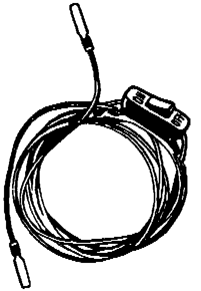
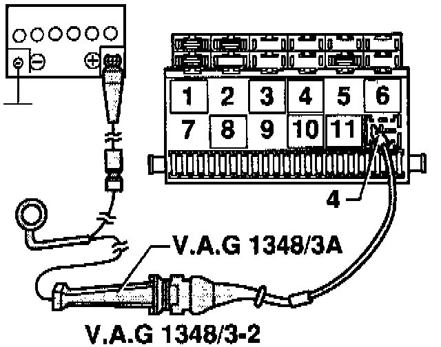

Operating Pump For Testing
The electric fuel pump operates only when the car is running or being started. Because many of the fuel pump and fuel injection tests require that the pump be operated with the engine off, the fuel pump relay can be temporarily bypassed during testing.
The procedure below uses a temporary wiring connection to bypass the fuel pump relay. The preferred method is to use a remote switch, such as the VW special tool VAG 1348/3(3A), but you can accomplish the same thing with a homemade fused jumper wire and an in-line switch.

OPERATING FUEL PUMP FOR TESTS
1. Remove the fuel pump relay from the fuse/relay panel.
CAUTION:
- A homemade jumper wire with a switch should be at least 1.5 mm metric wire size (14 gauge-AWG) and, for safety, should include a 20 amp in-line fuse.
- To avoid damaging the relay sockets, the ends of the jumper wire should be flat-blade connectors that are the same size as the sockets in the relay panel.
- Connect and disconnect the remote switch or jumper wire only with the switch in the off position.
- Relay locations may vary. The fuel pump relay should have either 67, 80, or 167 stamped on the top of the relay.
2. With the ignition off, connect the fused jumper wire across relay terminals 30 and 87 in the panel.
NOTE: Terminal numbers should be marked on the fuse/relay panel and on the relay bottom.
3. Turn the jumper wire switch ON to run the pump.
NOTE: If the pump runs only when the jumper is connected, the relay, the engine control module (ECM), or the circuit wiring is faulty. If the pump doesn't run with the jumper installed, the problem is most likely in the wiring to the pump or the pump itself is faulty. Checking Electrical Circuit